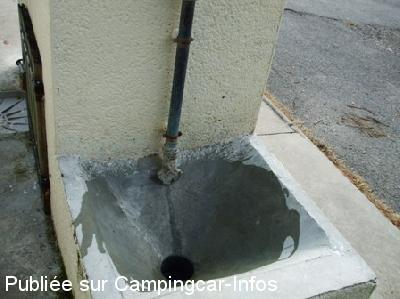

ASN = Aire de services avec stationnement nuit possible de :
PONT DE SALARS
(N° 748)
Accès/adresse :
Place de la Rivière
12290 PONT DE SALARS
12290 PONT DE SALARS
Latitude : (Nord) 44.27813° Décimaux ou 44° 16′ 41′′
Longitude : (Est) 2.72843° Décimaux ou 2° 43′ 42′′
Tarif : 2015
Stationnement gratuit
Eau : 5 €
Jetons chez les commerçants
Type de borne : Artisanale
Services :


Tous commerces
Autres informations :
Ouvert du 1/05 au 30/09
5 emplacements
Stationnement limité 3 jours
Tel: +33(0)565 468 427
Le rinçage de la plateforme s'effectue avec un bouton poussoir

Le 17/09/2011 par Louisette
Le 25/07/2008 par VALENTIN
Le 21/08/2005 par gisou
de
N&R
le 01/05/2016 :
Parking calme bitume. Eau un peu chère. Dommage. Mais ce parking gratuit à le mérite d exister. Merci à la commune. Tous les commerces principaux sont présents .Bons produits à prix raisonnables. Nous repasserons mais avec le plein d eau fait.Nous préférons de penser ces € chez les commerçants.
Parking calme bitume. Eau un peu chère. Dommage. Mais ce parking gratuit à le mérite d exister. Merci à la commune. Tous les commerces principaux sont présents .Bons produits à prix raisonnables. Nous repasserons mais avec le plein d eau fait.Nous préférons de penser ces € chez les commerçants.
de
RAKAKA
le 27/10/2015 :
Très cher payé le mètre cube d'eau, vidange pas pratique! La municipalité devrait faire des efforts pour attirer plus de monde!
Très cher payé le mètre cube d'eau, vidange pas pratique! La municipalité devrait faire des efforts pour attirer plus de monde!
de
Christiane
le 04/06/2015 :
§Le tarif des services (eau) est passé à 5€ ……emplacements pour les CC riquiqui!.pas agréable! vidange pas pratique ,proche route ……..mais dans le coin il n'y a pas grand chose comme parkings gratuit …..alors on fait avec
§Le tarif des services (eau) est passé à 5€ ……emplacements pour les CC riquiqui!.pas agréable! vidange pas pratique ,proche route ……..mais dans le coin il n'y a pas grand chose comme parkings gratuit …..alors on fait avec
de
eric 16
le 26/08/2014 :
Aire officielle vite complète 6 emplacements mais une tolérance sur le parking attenant très bonne accueil des commerçants du village belle halte en famille
Aire officielle vite complète 6 emplacements mais une tolérance sur le parking attenant très bonne accueil des commerçants du village belle halte en famille
de
mimi28
le 24/11/2013 :
Aire très bien située au bord de rivière et centre ville.Possibilité de balades . Pizzas sur place.
Espaces de stationnement bien délimités sur sol dur.
Nuit calme
Aire très bien située au bord de rivière et centre ville.Possibilité de balades . Pizzas sur place.
Espaces de stationnement bien délimités sur sol dur.
Nuit calme
de
rapido 72
le 17/10/2013 :
superbe région ,y suis passe le 10 aout ,pas possible de stationner ,fête au village ,manèges .avons été au camping "les rives du lac" .
superbe région ,y suis passe le 10 aout ,pas possible de stationner ,fête au village ,manèges .avons été au camping "les rives du lac" .
de
coala84
le 18/09/2013 :
très bien le camion pizza était là et elles sont bonnes...le village accueillant
très bien le camion pizza était là et elles sont bonnes...le village accueillant
de
Didier27
le 26/09/2012 :
Etape idéalle pour se reposer.
Etape idéalle pour se reposer.
de
JMG
le 15/07/2012 :
§
Bonjour, arrivé le 13/07 en fin de matinée, j'y ai passé la fin de la journée et départ le 14 au matin, village super commerçants tres acceuillants...3€ pour le jeton, que l'on trouve dans de nombreux de magasins,liste dispo sur la borne de service...bien faite par ailleur...
toujours possibilité de stationner 3 jours...
§
Bonjour, arrivé le 13/07 en fin de matinée, j'y ai passé la fin de la journée et départ le 14 au matin, village super commerçants tres acceuillants...3€ pour le jeton, que l'on trouve dans de nombreux de magasins,liste dispo sur la borne de service...bien faite par ailleur...
toujours possibilité de stationner 3 jours...
de
Louisette
le 17/09/2011 :
De passage sur cette aire je n'ai pu que constater que la grille située sous le robinet d'eau propre était souillée, suite à la vidange de cassette pourtant une vidange très pratique est prévue pour cet usage voir la photo que je joins.
De passage sur cette aire je n'ai pu que constater que la grille située sous le robinet d'eau propre était souillée, suite à la vidange de cassette pourtant une vidange très pratique est prévue pour cet usage voir la photo que je joins.
de
g.t
le 02/09/2010 :
Pas mal cet endroit, je vous recommande le resto juste en face Logis de France.
Pas mal cet endroit, je vous recommande le resto juste en face Logis de France.
de
titite35
le 16/07/2010 :
Bravo à la municipalité pour l'aménagement de cette aire : 5 places sont matérialisées mais la parking est très grand et permet le stationnement de nombreux camping-cars. En plus, WC publics et possiblité de balade en vélo le long de la rivière. Tous les commerces à proximité et un marchand de pizzas le lundi soir. Un petit bémol : 3€ pour 80 litres c'est un peu mesquin; pour le prix, on pourrait au moins avoir la possilité de remplir la cuve (140 litres nous concernant).
Bravo à la municipalité pour l'aménagement de cette aire : 5 places sont matérialisées mais la parking est très grand et permet le stationnement de nombreux camping-cars. En plus, WC publics et possiblité de balade en vélo le long de la rivière. Tous les commerces à proximité et un marchand de pizzas le lundi soir. Un petit bémol : 3€ pour 80 litres c'est un peu mesquin; pour le prix, on pourrait au moins avoir la possilité de remplir la cuve (140 litres nous concernant).
de
galinier christelle
le 14/07/2009 :
Coin agréable.
Coin agréable.
de
Roche
le 02/05/2008 :
6 emplacements seulement mais le parking est assez grand pour accueillir les autres CC. Toujours les jetons à 2€ pour 80 L. d'eau. Calme et agréable.
6 emplacements seulement mais le parking est assez grand pour accueillir les autres CC. Toujours les jetons à 2€ pour 80 L. d'eau. Calme et agréable.